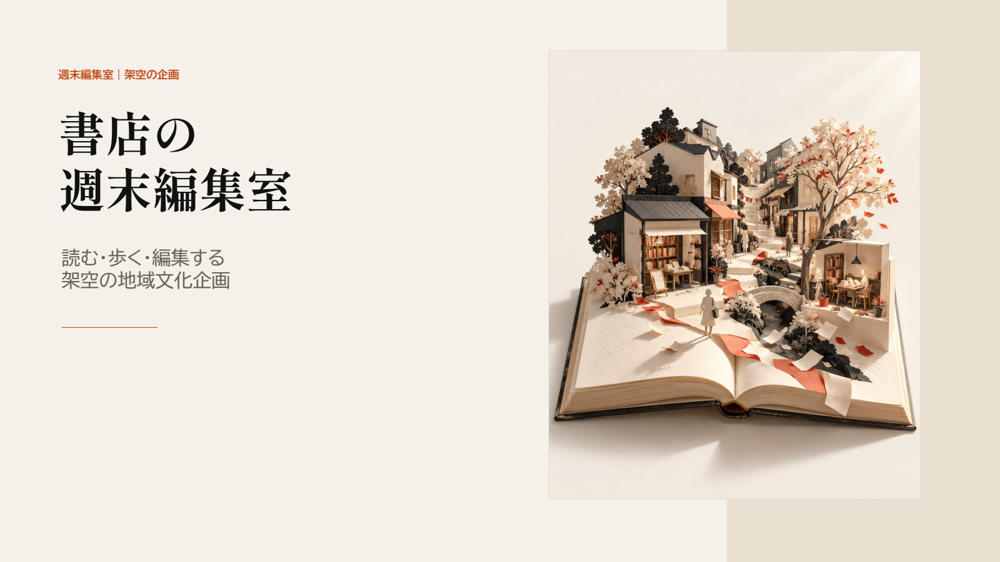

<!doctype html><html lang="ja"><meta charset="utf-8"><meta name="viewport" content="width=device-width,initial-scale=1"><title>書店の週末編集室</title><style>body{margin:0;background:#111;color:#fff;font-family:system-ui;display:grid;min-height:100vh;place-content:center}main{width:min(96vw,1440px)}img{display:block;width:100%;aspect-ratio:16/9;object-fit:contain;background:#F4F1EA}nav{display:flex;align-items:center;justify-content:center;gap:1rem;padding:1rem}button,a{color:inherit;background:#292929;border:1px solid #777;border-radius:4px;padding:.6rem 1rem;font:inherit}p{text-align:center;font-size:.8rem;color:#bbb}</style><main><nav><button onclick="move(-1)">前へ</button><span id="count">1 / 8</span><button onclick="move(1)">次へ</button><button id="play" onclick="toggle()">再生</button><a href="deck.pptx">PPTX</a></nav><p>架空の地域文化企画。完成PPTXのPowerPoint16の実描画。</p></main><script>let i=1,t=null;function move(d){i=(i-1+d+8)%8+1;page.src='render/slide-'+String(i).padStart(2,'0')+'.png';page.alt=i+'ページ';count.textContent=i+' / 8'}function toggle(){if(t){clearInterval(t);t=null;play.textContent='再生'}else{t=setInterval(()=>move(1),6000);play.textContent='停止'}}onkeydown=e=>{if(e.key==='ArrowRight')move(1);if(e.key==='ArrowLeft')move(-1)}</script></html>